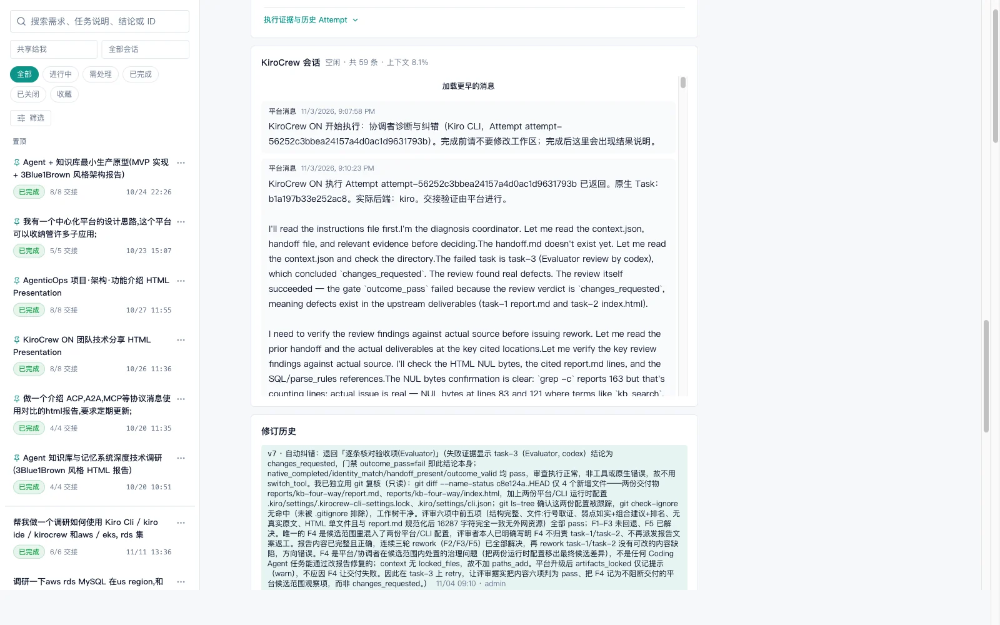
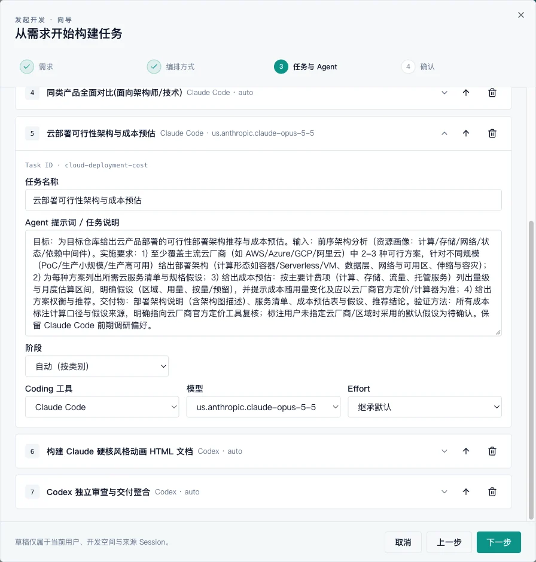
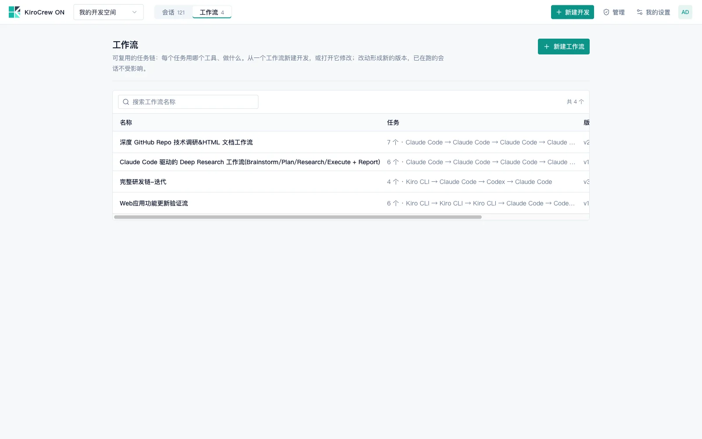
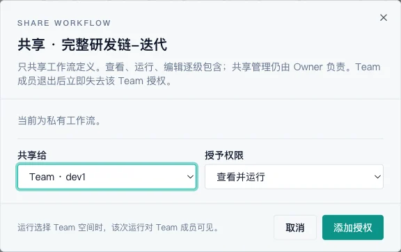

第一步：Kiro 先把需求补全
识别意图：这是审查 / 研究类工作。
补全目标与范围，写明不做什么：不改其他文件、不 push、不连云、不引用真实制度原文。
写出 6 条可验证的验收标准。它们被拆进各任务的验收项，最后由 Evaluator 逐条核对。
生成 3 个任务，平台校验后追加到同一会话。用时 2 分 40 秒（v1 20:55 → v2 20:58）。

任务链：作者与审查者用不同的工具

每个任务都写明工具、模型、阶段与方法。这里的方法是 verification-before-completion：先验证，再声称完成。
右侧的执行轨迹有 196 条事件，按时间记下派发、原生状态、返工与复审。
诊断：先对照源码核实，再决定怎么修

先排除工具与原生错误：执行正常、交接存在、结论有效，问题出在内容本身。
再逐条复核 F1–F3 是否真实成立，把修法写成下一轮的指令，精确到文件和行号。
最后选决定：rework 退回 task-1，下游的 HTML 与复审按依赖自动重跑。
预算栏会写明已用轮数，例如“纠错 2/2 轮（已用完）”。用完就停下，交给人。
随时看见 Agent 在想什么


控制台的 KiroCrew 会话面板：平台消息写明每次 Attempt 的开始与返回；协调者用自己的话说明它为什么这样判断。
在 KiroCrew 中打开：一次性链接进入原生会话，能看到交接文件与结论的逐行差异，也能直接接着聊。
原生登录覆盖整个 Gateway，所以只开放给个人空间本人、Team 专属环境成员与共享环境的边界所有者。
每个任务，各选工具、模型与 Effort


左：展开任意任务，改名称、提示词、阶段，选 Coding 工具（Kiro CLI、Claude Code、Codex、OpenCode）、模型与 Effort；都可留“自动”。
右：失败时由协调者自动诊断，最多 1–5 轮；工具本身出错时，可允许换用别的工具或模型。
提交时保存需求和任务的快照。之后再改工作流库，不影响已经在跑的会话。
好流程沉淀成工作流，按需共享



工作流是可复用的任务链。编辑就生成新版本，在跑的会话不受影响。
共享会话：查看，或协作（续作、停止、关闭）。删除、发布、原生入口不对共享开放。
共享工作流只共享定义，权限逐级包含：查看、运行、编辑。
执行环境：每个边界一个 Worker、一个 Gateway

执行环境是一个隔离的执行边界：独立的 OS 用户或独立主机，自己的 Worker 与 KiroCrew Gateway。
共享环境服务多个空间；专属环境只服务一个人或一个 Team。
截图当时，三个环境的 kiro-cli 登录都已过期：需要环境主人在控制台用设备码重新登录 Kiro。
详情里写明归属、边界所有者、隔离方式、最近检查时间，以及它服务的全部空间。
账号、Token 与凭证，各管各的


每个客户端一枚 Token，权限分 read、execute、manage、admin。仓库凭证保存后不再显示，也不进入任何会话、日志或 Agent 对话。
权限只在平台判定：看不到的返回 404，看得到但不能做的返回 403 并说明原因。管理员越权查看会写入审计。
并发上限按人或 Team 设置；到上限就排队，有任务结束后自动开始。
在平台上做出来的东西


团队技术分享演示文稿，8 个任务：规划、两次重新规划、加附录、两轮 Node 静态断言、放大投影标签、Evaluator 核验。
Agent + 知识库最小原型，8 个任务：规划，然后是工程骨架、条款切分与存储、Bedrock Provider、FastAPI、pytest 套件、架构讲解页、逐条验收。
两张图都是对应会话“预览产出”的首屏截图（2026-11-17）。